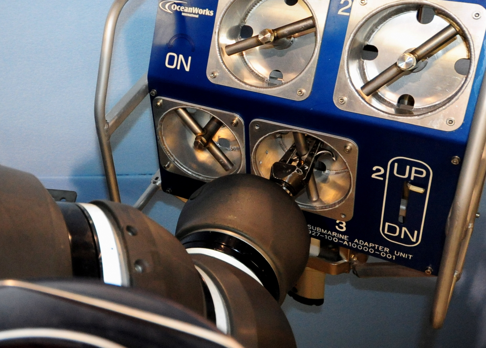

Canada: +1 604 398 4998
Submarine Rescue Intervention Systems
OceanWorks International offers a full range of subsea intervention assets designed for rapid deployment and operation in a number of submarine rescue and related operating scenarios. Capabilities include search, salvage, ordinance recovery, disabled submarine life extension, escape support and survivor rescue.
The urgency of a situation involving rescue from a Disabled Submarine (DISSUB) requires high quality, modern technology that can be quickly and efficiently mobilized on a Vessel Of Opportunity (VOO) in a minimal amount of time. Our intervention products include Atmospheric Diving Systems (ADS) and Remotely Operated Vehicles (ROV). These intervention assets can be used to assist escape and rescue and to deploy Emergency Life Support Stores (ELSS) systems and connect Submarine Emergency Ventilation and Decompression Systems (SEVDS). OceanWorks supplied intervention equipment is used to extend the life of survivors and support escape while rescue assets are being mobilized.
ROV intervention systems can also be utilized for a wide variety of search and salvage operations including ordinance and casualty recovery.
Remotely Operated Vehicles (ROVs)
Remotely Operated Vehicle (ROV) systems can be utilized for a variety of rescue related missions, including wide area search, submarine location, hatch clearing, ELSS pod posting, submarine ventilation system connection, salvage and general intervention. The ROV can be used for multiple applications at depths exceeding 6000 meters. It can also can be used in situations where depth exceeds the rating of the ADS or in very hazardous scenarios. The HARDSUIT™ Quantum and ROV are often operated as a pair for safety and enhanced task performance with the ROV providing heavy lift power, tool power and area lighting / video while the ADS undertakes all work requiring fine dexterity and sensitive manipulation. ROV systems are available in a number of sizes and capabilities ranging from small observation only to heavy duty, full work class. OceanWorks, with its expertise in ROV operation, special tooling design and relationship with major ROV suppliers, can recommend the best ROV configuration to compliment the HARDSUIT™ operation and other customer requirements.
Submarine Emergency Ventilation and Decompression System (SEVDS)

In a submarine disaster it is essential to stabilize the internal environment and extend the life of survivors while the rescue equipment is being mobilized. The OceanWorks Submarine Emergency Ventilation and Decompression System (SEVDS) can be rapidly deployed to the scene and connected by the HARDSUIT™, ADS, an ROV, or conventional divers. With air supply and return monitored and controlled from the surface, the SEVDS can then be used to control DISSUB pressurization and clear smoke, carbon dioxide or other toxic gas accumulation. The OceanWorks SEVDS is designed for use with our custom Submarine Receiving Fittings (SRF) and Submarine Adapter Units (SAU). The SEVDS connections are compatible with NATO STANAG 1450. The unique OceanWorks SRF and SAU fittings are specifically designed for operation by divers, ADS and ROV systems.
Emergency Life Support Stores (ELSS)
Emergency Life Support Stores (ELSS) pods are pressure vessels that allow transfer of food, water, medical supplies, oxygen candles or CO2 scrubber materials to the disabled submarine. The pods are supplied compliant with STANAG 1391 to fit the escape tower of NATO submarines. Alternate pod configurations have also been made for nonstandard applications. The OceanWorks ELSS pods and accessories can be supplied as individual components or as a fully integrated system with four (4) carousels carrying a total of 20 pods, a flyaway launch and recovery system and acoustic tracking and release systems to allow rapid deployment from a small vessel.
For more information please contact: sales@oceanworks.com